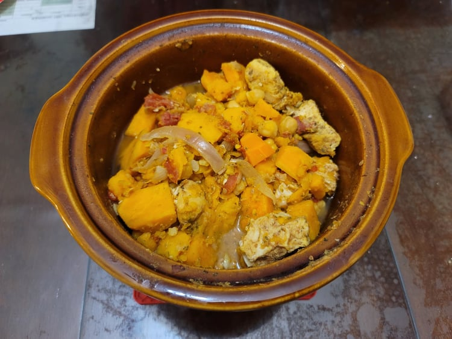

Chicken Marrakesh

Ingredients:
- 2 lb Chicken breasts, cubed
- 2 large Carrots, peeled and chopped
- 2 large Sweet potatoes, peeled and cubed
- 1 Onion, sliced
- 2 cloves Garlic, minced
- 1 15 oz can Garbanzo beans, drained and rinsed
- 1/2 tsp Cumin
- 1/2 tsp Turmeric
- 1/4 tsp Cinnamon
- 1/2 tsp Black pepper
- 1 tsp Dried parsley
- 1 tsp Salt
- 1 15 oz can Diced tomatoes
Instructions:
- Place all the chopped vegetables and chicken into a slow cooker. Sprinkle over the spices, salt, and parsley and then top with the diced tomatoes. Stir to combine.
- Cover the cooker and set to high. Cook until the sweet potatoes are tender and the sauce has thickened, about 4 to 5 hours.